Part II and Part III
Part II on Leda (Hard)
- Clear (or skip) Part II on every lord's path: a lord only joins Part III, and their capture/blade actions only work there, after their Part II is cleared (JP: k1persia, AppMedia). Play Leda's Part II in full for Creek and Nathan; skipping the war chapters may block them (Game8).
- Creek joins at Ch2 if 'My Late Sister's Accessory' was done in Part I.
- Ch3: Nathan comes with the first reinforcement wave up the right-side alley. Creek must land the final blow; give Creek an anti-cavalry weapon. Recruit Nathan at base before Ch4.
- Keep guests Aswan and Tahonia alive in Ch3 so they join in Part III.
- NGA: play Ch1–3 by hand, Ch4–6 are continuous battles.
Part III (Hard): five squads of eight
- You start with 2 squads and unlock up to 5. Squads A and B are the core; C–E fill in as they open.
- Part I recruits rejoin in Section 2 by talking to them. Merge Causality unlocks after Section 1: Obelisk Chamber → Shrine of Causality, 300 Karma Shards per unit. Pick the later path's copy as the "main stats and class" source; highest stats and all skill ranks/Combat Arts are combined.
- Merges here: Mu (four copies, three merges), Guzran, Esmeralda (about 1,500 shards). If shards are tight, Game8 suggests spending them on Boons of Salvation instead; merge Mu and Guzran first.
- After merging, don't restart the stage, or the shards are lost (CN).
- Master classes need Lv45 and the matching temple restoration where noted. Divine classes open in Section 4; each needs its licence item from the Temple of the Diadem (keys: Heretics' Cave, far east Cougar Woodlands, Giant's-Print Foot, Enno Isle, Sand-Shadow Fort). Only one unit per Divine class.
- Bench (already used in Part I; rotate in as needed): Peter, Dadao, Majide, Ninae, Nydine, Peppe, Mikaela, Yang Jie, Gaitz, Io, Kiroc, Goliath, Ursula, Noctula, Bonaventure, Tobias, Diego, Dante, Zarcone, Jasmine, Simon, Ludia, Sha Lan.
- Part III is a hit-rate game (CN): fliers are everywhere and dodge well, so stack bow-hit bonuses and accuracy over raw Str/Mag. Collect several Cleansing Blades for Netherworld barriers.
Squad A · Blade


Squad B · Trident
 Theodora
Theodora 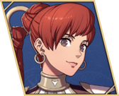
Ultand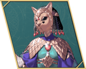
Orchel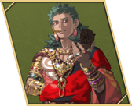
Talimun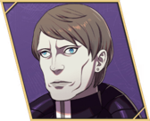
Fabio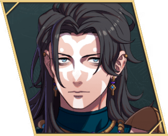
Nuzzuo Catania
Catania  Fianna
Fianna Squad C · Cavalier
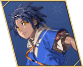
Cai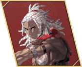
Bertrand Buccar
Buccar  Loretta
Loretta 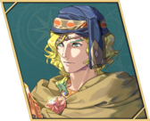
Seteth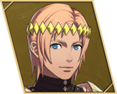
Lysander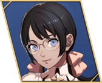
Tialla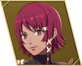
LilianSquad D · Apsara
 Leda
Leda 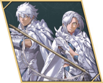
Eshmel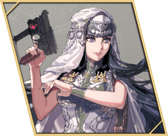
Anatolia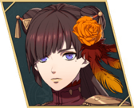
Hong Hua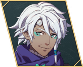
Troy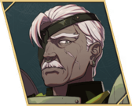
Benditz Olympia
Olympia 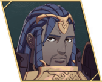
Centurio